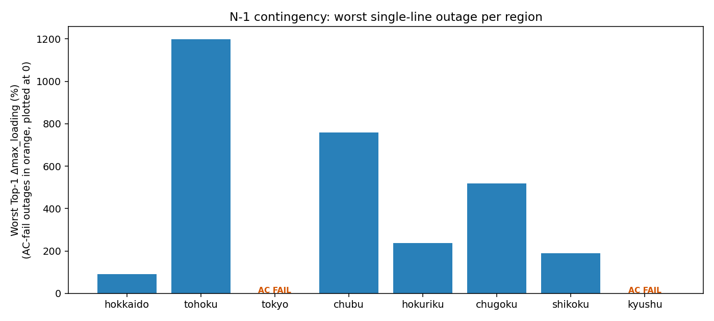

⚡ Japan Power Grid
🔗 Before / After 比較（トポロジ改修）バスアドミタンス行列 (Ybus) — シミュレーションツール
$\mathbf{Y}_{\mathrm{bus}}$ は系統の電気的接続を表す疎行列（バス×バス）。
ここでは DB更新済み建造モデル（docs/data/built）から
ブラウザ上で実時間に Ybus 隣接を構成し、操作・再計算できます。
地域を選ぶ→スパイ図を描画（対角=自己／送電線結合／変圧器）→
ホバーでバス情報・クリックで行と列（接続先）をハイライト・枝の on/off で
非零パターンと統計（非零数・密度・次数・連結成分数）が即時更新されます。
▸ 静止プロット（地域別 PNG・大元・Spy・組立アニメ）を見る
事前生成した静止スパイ図のギャラリー（参考用）。最新の操作・解析は上のシミュレーションツールで行います。
▸ 全地域 Ybus 統計を表で比較
N-1 コンティンジェンシー解析（インタラクティブ）
各地域 220 kV 以上の幹線を1本ずつ脱落（N-1）させ AC 再潮流を行い、最悪事故を抽出した。
地域を選ぶと、その地域の Worst Top-30 ランキングが表示されます。
関西は基底 AC 非収束のためスキップ（docs/WEST_AC_ANALYSIS.md）。

詳細CSVは docs/data/n1/。生成元: scripts/run_n1_contingency.py。
電圧階級 Voltage
表示レイヤ
発電所種別
地域 Regions
地形オーバーレイ (背景・任意)
RE適地スコア (試験)
Area Color Mode
送電線・変電所を地理的エリア（電力会社管轄の目安）ごとに色分けします。境界は概略で、連系線付近は厳密な管轄と一致しない場合があります。
Layers
Voltage
Regions
系統トポロジー Force Graph
ノード=バス、枝=送電線・変圧器。
ノードをドラッグ可。ホイールでズーム。
※ これは潮流計算用の縮約モデル（約2,189バス・主要6電圧階級）の構造図です。全系統の接続グラフ（17,333ノード）とは別物で、系統図/接続編集タブが正典です。
電圧レイヤー
凡例
重い枝ほど太く表示。
シミュレーション
Region
Layers
実ルート電圧レイヤー
Power Flow
全国基幹/全国ゾーンは別モデル（500/275kV概観・同期島）として併設。
※過負荷(loading>100%)や低電圧は合成定格の錯視・放射端の電圧沈下＝正直な物理（各地域の警告参照）。
線色=潮流率(loading %)、バス色=電圧 (Vm)。